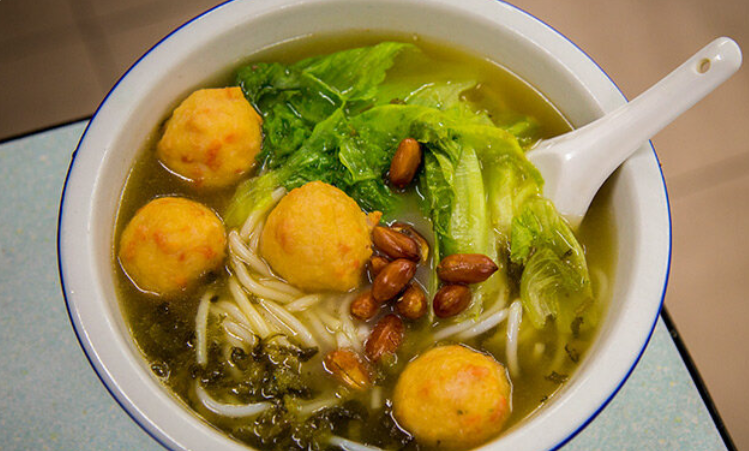
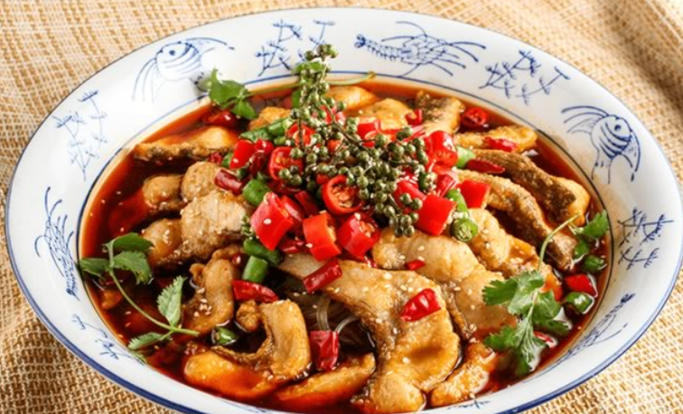
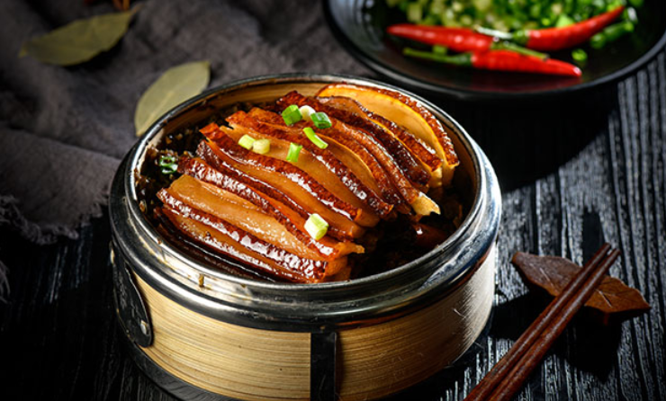
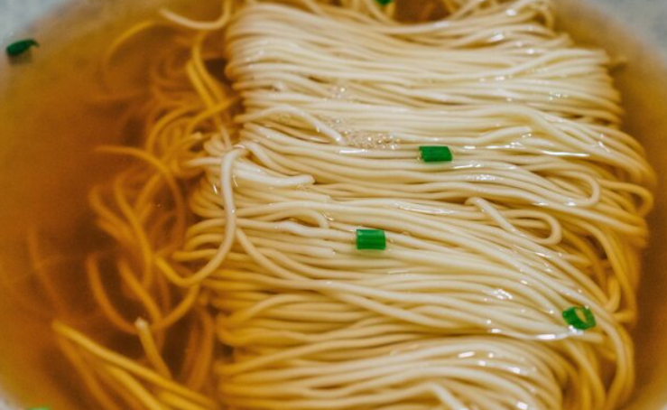
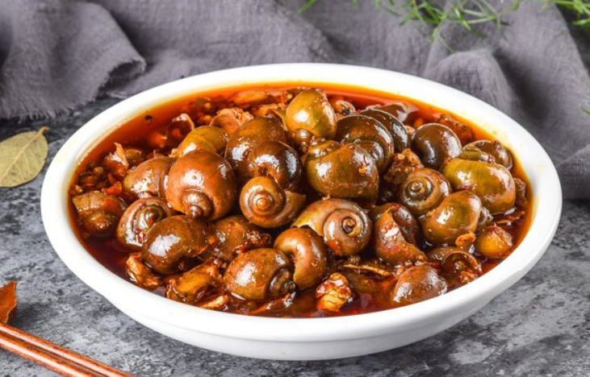
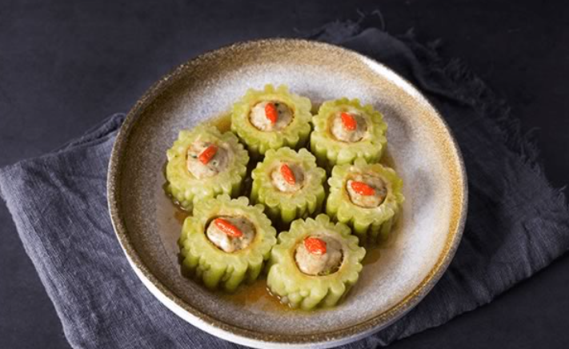

美食特色
返回首页

桂林米粉
桂林米粉是广西桂林地区历史 悠久的特色传统名小吃。以其独特的风味远近闻名。

阳朔啤酒鱼
阳朔"啤酒鱼"“，是阳朔有名的 地方特色菜，鱼肉鲜辣可口，无一丝鱼本身的腥味，啤酒和鱼 肉的香味可以让人胃口大开。

荔浦芋扣肉
荔浦芋扣肉是广西荔浦及 桂北地区的地方传统名菜，广西各地传统宴席名菜， 曾获"全国名菜"之称。

尼姑素面
尼姑素面与桂林米粉堪称姐妹小吃， 是广西桂林地方风味小吃之—。

桂林田螺
桂林田螺是桂林特色风味小吃， 桂林田螺长期生长在水稻田里，所以称之为田螺。

桂林十八酿
桂林十八酿即平乐十八酿， 是指把各种调料加入到肉馅里，然后填入不同蔬菜或壳类做成的 "外衣"中，或蒸，或焖，熟而成"酿”。